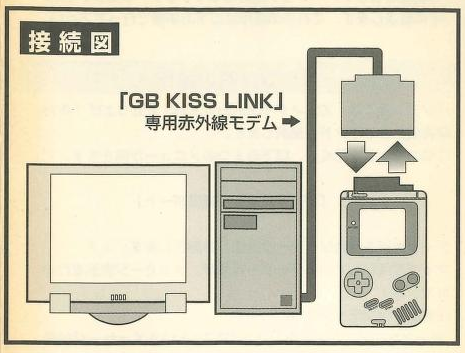

The Show Must Go On
Video games and television have a lot of shared history. Many home consoles of the earlier generations were played exclusively on TVs. These machines were marketed as interactive experiences, like a program or show viewers could directly control. They were promoted as digital entertainment systems, as accessories not unlike VHS players or high-end stereos. Some games were even specifically designed to take advantage of CRT TVs, such as those compatible with the NES Zapper or various other "light guns". Even as video games evolved into their own media, TVs were still the medium through which many people enjoyed them.
Handheld consoles took this relationship further by incorporating their own TV tuners. With these devices, gamers could grab over-the-air broadcasts and watch them on their portable systems. TV on-the-go was a big deal for most of us kids in the 90s, especially in an age where the internet as we know it today didn't yet exist. The Sega Game Gear and NEC TurboExpress both received their own TV tuners, and a decade later so would the Nintendo DS and Sony Playstation Portable. The Game Boy Advance also featured a number of TV tuners, however, nearly all of these were third-party products not endorsed by Nintendo.
In fact, only one such tuner actually managed to get licensed. In April of 2006, a Japanese toy company called Agatsuma Entertainment Co. released the Agatsuma TV Tuner (hereafter referred to simply as ATVT). Despite being rather plainly named, the ATVT was the first time Nintendo had sanctioned such hardware for their handhelds. Although Agatsuma originally announced the TV tuner in 2004, they may have had some trouble finalizing and launching it, so there was some delay. By the time the ATVT came out, the DS had succeeded the GBA. Thankfully, the ATVT still worked through the DS' Slot-2, so all Agatsuma had to do was change the packaging.
Some pretty wild peripherals get featured in these Edge of Emulation articles, many of which have nothing to do with actually playing video games. I've never tried to emulate TV stations or their broadcasts, but preserving everything the Game Boy has to offer demands it. While the ATVT isn't particularly extraordinary in the grand scheme of video game history, it still has its place. Even if we may not consider these TV tuners groundbreaking or boundary-pushing today, it's important to record what it was like to use the ATVT back then. Losing anything to obscurity is a tragedy, no matter how small. So with that in mind, it's time to dig in and uncover Agatsuma's secrets.
Dead Air
At first, I wasn't certain the ATVT was even a GBA cartridge. As I mentioned in my last article, the product's box is quite deceptive. It prominently displays the DS logo and shows it being used with an original DS unit. The entire design of the ATVT seems perfectly crafted with the DS in mind as well. Now, on closer inspection, it doesn't appear to be a Slot-2 DS accessory, as the box also features the GBA logo. This was all impossible to verify just from pictures on the internet, though. Some news articles mentioned GBA support, as did Agatsuma's old webpage about the tuner. Still, to get to the truth of the matter, I'd have to acquire the hardware myself.
The ATVT isn't all that expensive. However it is uncommon and a bit hard to find. Most of the difficulty comes from picking the correct search term. There seem to be countless TV tuners for the GBA, and when searching for DS TV tuners, most of the results are for the first-party one Nintendo made in 2007. Few sellers specifically list it under "Agatsuma". You just have to get lucky, I guess. In any case, I managed to snag a brand-new complete-in-box version for relatively cheap.
In regards to the cartridge itself, at first glance one has to wonder... is this thing even a cartridge? To simply say the ATVT is big is to understate its sheer size. It's all-caps bolded HUUUUGE. Previously, I'd always considered the e-Reader to be the largest GBA cartridge, but the ATVT is certainly bulkier. This bad boy is actually larger than the original DS when folded! When put into the the DS' Slot-2, it's like holding 2 DS units at the same time, a double DS, a DDSS, or something along those lines. It truly boggles the mind that a mere cartridge has these proportions. The ATVT is a literal brick.
The ATVT is seriously sizable.
Additionally, the ATVT is power hungry. It requires a grand total of 6 AA batteries to run at all. This is comparable to the Game Boy Printer and Game Gear, both of which needed the same amount of batteries. If used in conjunction with the original GBA, that's 8 batteries needed. Agatsuma estimated that the ATVT would last around 4 hours of continuous use, more or less. That's a steep price to pay for all of those batteries, but probably better than anything the Game Gear managed when using its TV tuner.
The ATVT has a built-in telescopic antenna that can be adjusted in almost any direction. Additionally, users can plug the ATVT into a cable outlet to receive television signals that way too, effectively turning the GBA/DS into a miniature TV. And as if that wasn't enough, the ATVT accepts composite video input too, allowing it to work with home consoles from the 7th Generation such as the Wii or Xbox 360. Audio output is handled by the cartridge itself via 2 speakers at the bottom, although sound is restricted to mono. Finally, the ATVT includes a headphone jack.
When I got my hands on the ATVT, I immediately confirmed that it was a GBA cartridge. Even though it was a little on the chonky side, the hardware worked on the original GBA and the GBA SP. Unfortunately my GameCube's disc drive is messed up, otherwise I would have tested it on the Game Boy Player too, just for fun. Imagine hooking up your GameCube to a TV to run GBA hardware that lets you watch TV instead of just turning on your TV to watch TV normally. For a brief moment in time (in Japan at least), this was possible! Digressing, now that I knew the ATVT was in fact GBA compatible, I could get to work emulating the device.
Unfortunately, I ran into a familiar problem. As it turns out, it seemed no one had ever successfully dumped the ROM for the ATVT. This was the same situation with the Campho Advance that I talked about in the last article. The ATVT is just as (if not more) obscure, so it wasn't surprising that no one had dumped it. Once again, I turned to some DS homebrew called the GBA Backup Tool, which can dump most GBA cartridges with ease. Strangely enough, the homebrew couldn't detect anything in Slot-2. For whatever reason, the ATVT was invisible to it, meaning I couldn't extract the ROM this way.
Just like before, I figured I'd have to come up with my own software solution. Thanks to libnds and devkitPro, it's extremely straightforward to make DS homebrew that can save files and data to a flashcard. There's no need to fuss around with stuff like loading MultiBoot programs onto a GBA and exporting bytes via JoyBus to a hacked Wii, which is how the Campho Advance was done. I guessed that the GBA Backup Tool was trying to do some fancy analysis on the ATVT's ROM to determine its size (e.g. 1MB, 2MB, 4MB, etc) so it could dump everything without mirroring any data or inadvertedly filling the dump with garbage. For some reason, the ATVT was messing that analysis up, so the GBA Backup Tool decided nothing could be dumped...
My approach then, was to be much more blunt. Rather than carefully probe and estimate the ATVT's ROM size, I decided to just dump the first 8MB of data that could be read from the cartridge and see what the results looked like. In just a short amount of time, I compiled my homebrew, loaded it onto my DS with the ATVT slotted in, ran the code, and pulled the data from my flashcard's SD card. In a hex editor, I examined the results. Thankfully, there isn't anything special about the way the ATVT handles ROM; the data was much the same as any regular GBA cartridge, complete with a valid ROM header, "Nintendo" logo, and a bunch of ARM/Thumb instructions.
The ROM data repeated every 512KB, which meant that was the ROM's maximum size. Reading bytes past 512KB that would just mirror or loop ROM data. I pared down the 8MB file to 512KB and fed it to GBE+ to see what would happen. Although the emulator did not support the cartridge just yet, I needed to see what it would do and then investigate its behavior. I was pleasantly surprised when the Agatsuma logo appeared onscreen. The software seemed to boot up with no issues. After the logo disappeared, it dropped the emulator onto a screen where users can start manipulating menus and watching TV. At this point, GBE+ froze. While some progress had been made, it was now time to really dive deep into the inner workings of the ATVT.
The ATVT was previously undumped. It froze soon after displaying this splash screen.
Simulcast In 2-bits
To begin, I opened up GBE+'s debugger after the ATVT locked up. Right away, I saw that the code was stuck in a loop. It continually tried to read a single byte from the memory location 0xE000000. The loop would only exit if Bit 6 of that byte was set, so at a minimum this byte had to be 0x40. After that, the ATVT seemed to proceed normally. At least, I could change between Channel 1 and Channel 2, and I could bring up a menu for things like changing brightness and hue, searching for active TV channels, and saving favorite channels.
There isn't much to look at on the ATVT besides these menus and live TV streams.
My next step was to have GBE+ log any suspicious memory reads or writes to see what kind of I/O registers were being used here. I noticed only 4 bytes being consistently written to in the range of 0xE000000 :: 0xE000003. They all seemed to be 8-bit registers too. Having no clue what they did, I tenatively named them TV_CNT_A, TV_CNT_B, TV_CNT_C and TV_CNT_D. The logs had a massive amount of write to the first 2 registers, and I was almost overwhelmed by what was going on. The values were somewhat obscure at first glance as well:
WRITE -> 0xe000000 : 0xc5 WRITE -> 0xe000000 : 0xc5 WRITE -> 0xe000000 : 0xc4 WRITE -> 0xe000000 : 0xc6 WRITE -> 0xe000000 : 0xc4 WRITE -> 0xe000000 : 0xc4 WRITE -> 0xe000000 : 0xc4 WRITE -> 0xe000000 : 0xc6 WRITE -> 0xe000000 : 0xc4 WRITE -> 0xe000000 : 0xc4 WRITE -> 0xe000000 : 0xc4 WRITE -> 0xe000000 : 0xc6 WRITE -> 0xe000000 : 0xc4 WRITE -> 0xe000000 : 0xc4 WRITE -> 0xe000000 : 0xc5 WRITE -> 0xe000000 : 0xc7
Seems pretty inscrutable, right? Fortunately, I'd seen this kind of thing before. I was instantly reminded of the way the Soul Doll Adapter accesses EEPROM and how the Magic Reader sends commands and reads data. This was an example of "bit-banging", essentially sending or receiving 1 bit of data at a time. Often this is done through a single register, so multiple writes like this are needed. As the above chart shows, Bits 2, 6, and 7 are constantly set HIGH. The only parts that do change are Bits 0 and 1.
This indicated a so-called "Two-Wire Interface" because just 2 inputs/outputs are needed to transfer data. Generally, one bit acts as a clock line, which means it transitions between HIGH and LOW states to push or pull data. It's somewhat analogous to a pump. The other bit acts as a data line, which is the actual 0 or 1 value being transferred. Since there's just 2 inputs/outputs being used, often some kind of protocol specifies the start and end of a byte being sent over this kind of interface.
It was rather hard to determine which bit was the clock or data line just by looking at the logs. Instead of blankly staring at things and hoping it would just click, I decided to see what code was responsible for writing to TV_CNT_A and TV_CNT_B. The software has to translate individual bytes into a series of writes to these registers. Once that code was found, I could trace it and see exactly how the two lines were supposed to work. GBE+'s debugger allows breakpoints when certain memory addresses are accessed, so it didn't take long to pinpoint where in ROM this process started.
With the location in hand, I opened Ghidra to take a higher-level peek at the ATVT's code. After a fair amount of backtracking and manually labeling a bunch of functions, I concluded that Bit 0 of the control registers was used as a data line, while Bit 1 was the clock line. A rather straightforward protocol sent various commands and parameters to the ATVT. Issuing these commands involved 5 distinct parts: a start signal, writing the command bytes, various acknowledgement signals, potentially reading response bytes, and a stop signal. Since I had all the code that handled each of these stages, I could match up everything with my logs. The chart below roughly demonstrates how the software deals with commands:
----------------------------------------------------------- START SIGNAL TRANSFER BYTE ACKNOWLEDGE SIGNAL TRANSFER BYTE ACKNOWLEDGE SIGNAL ... READ BYTE (only used for some read commands) ACKNOWLEDGE SIGNAL (only used for read commands) STOP SIGNAL -----------------------------------------------------------
Additionally, the following charts detail the exact steps needed to create each stage by accessing the control registers:
----------------------------------------------------------- Start Signal ----------------------------------------------------------- 1) Set Clock High and set I/O Data to 1 2) Set Clock High and set I/O Data to 0 ----------------------------------------------------------- Transfer Bit ----------------------------------------------------------- 1) Set Clock LOW 2) Set I/O Data to transfer bit 3) Set Clock HIGH 4) Set Clock LOW ----------------------------------------------------------- Acknowledgement Signal ----------------------------------------------------------- 1) Set Clock LOW and set I/O Data to 0 2) Set I/O Data 1 3) Set Clock HIGH 4) Set Clock LOW and set I/O Data to 1 ----------------------------------------------------------- Stop Signal ----------------------------------------------------------- 1) Set Clock LOW and set I/O Data to 0 2) Set Clock HIGH 3) Set Clock HIGH and set I/O Data to 1 ----------------------------------------------------------- Read Bit ----------------------------------------------------------- 1) Set Clock LOW and set I/O Data to 1 2) Set Clock HIGH 3) Read Bit 0 of TV_CNT_A or TV_CNT_B
The "Transfer Bit" and "Read Bit" parts happen a total of 8 times to form a complete byte. The acknowlegdement signal only comes after the full byte is finished. Bytes are transferred most significant bit (MSB) first. With all of this information finally sorted out, GBE+ was modified to deal with the protocol. The emulator could now report all the data being sent to the ATVT, giving me a better view of the device's commands. As an undocumented peripheral, it would take some trial, error, and a bit of wit to understand the purpose of these commands.
Chroma Control
To begin the process of documenting the ATVT's commands, I tried to look for obvious behavior. The most immediate one seemed to be 0xD8 0x0D 0x00. As far as I could tell, the first byte was a command bitfield and the others were parameters. In any case, right after this command was issued, the software started reading a large amount of data from the memory address range 0xA800000 - 0xA812BFF. This is exactly 76,800 bytes, which happens to be the same number of bytes required to render a 240x160 screen using 15bpp colors, or basically a bitmap image with the same resolution as the GBA's screen. I'd seen this exact number before when emulating the Play-Yan; the command was therefore responsible for rendering video frames.
There was an additional command that always came after drawing a new frame, 0xD8 0x0D 0x80. It was pretty much the same as the draw frame command, but the last parameter had changed. I surmised that this unknown command was probably clearing the previous framebuffer before overwriting it with new data. I had no way of testing this directly, since analog TV broadcasts are no longer a thing in the U.S. (unless you're setting up some fancy equipment yourself), and even then it would have to be in an NTSC-J format. It was also possible that this command simply prepared a new frame to be displayed rather than erasing any data. For the purposes of emulation, however, it would have no effect either way.
The Draw Frame and Clear Frame commands were constantly called at 30FPS, so it appeared that it was trying to draw something from Channel 1, the default channel. I didn't have to do anything special to get the channel recognized or anything like that. My next task was to see if I could get some kind of arbitrary image drawn. GBE+ was quickly modified to handle the address range corresponding to the framebuffer. At first, only a single 16-bit value was returned from this region of memory whenever the CPU read it. As a result a single color was then displayed across the GBA's screen.
It seemed straightforward enough to start displaying video after that. In the meantime, I wanted a more authentic feel for channels that weren't active. The plan was to have GBE+ simulate indvidual TV stations on different channels, each running local videos from the user's PC on a set schedule. If there were any gaps in the schedule, GBE+ could display a black screen to indicate that the channel's broadcast was unavailable. But that would have been boring, too simple, too plain. More realistically, the channel should have displayed dynamic noise.
To accomplish this, I first tried generating psuedo-random numbers via a basic Linear Feedback Shift Register, or LSFR. I was going to model it after the Game Boy's 15-bit LSFR. Mathematically speaking, it's a way of taking a single number (a seed) with a fixed amount of bits and transforming it by shifting the value and conditionally OR'ing the value. Ultimately, the process creates somewhat random looking numbers. The numbers aren't truly random, but they're distributed enough to look like noise to the casual observer. The downside of this LSFR is that it eventually starts to repeat. Every possible value will be cycled through once before the new input is the original seed.
To keep things simple, only 32 shades of gray were used. The results were okay-ish. The noise did look like real noise, but the pattern wasn't as spread out as I'd hoped. It was kind of blocky in certain patches. I was using GBE+'s current uptime in milliseconds as a seed so that every frame would be different, but I figured I'd have to ditch the LSFR for a better psuedo-random number generator. Ultimately I went with the rand() function built into C++. The results were much more pleasant to look at, since the function was using fancier math than the LSFR.
Stare long enough at the static and you just might see a face... 😱
Next, I wanted to tackle the commands for altering contrast, brightness, and hue. These were incredibly easy to figure out. All I had to do was play with an on-screen menu and watch the logs in GBE+. The hexadecimal format of each of these was 0xD0 0x10 ---, 0xD0 0x11 ---, and 0xD0 0x15 ---. The last byte in these commands is a parameter indicating how much to increase or decrease each setting. It's an 8-bit 2's complement, so the value can be adjusted in the range of -128 to +127.
Actually manipulating the video framebuffer to reflect these settings was a bit trickier, although I'd already done something similar with the Campho Advance. GBE+ has a lot of leftover utility functions from when it supported Custom Graphics (think custom textures in Dolphin or HD textures in N64 emulators, but for Game Boy graphics). These primarily deal with converting between the RGB and HSL colorspaces. GBE+ is no longer involved with Custom Graphics, but there are plenty of situations where HSL is very useful, so none of this code was eliminated. The ATVT's video options are a perfect example. Hue corresponds to the "H" of HSL. All the emulator needs to do is convert an RGB value to HSL, change the HSL components, and reconvert back to RGB. Brightness can be changed by adding or subtracting a constant value from each RGB component of a color.
Now, contrast was a bit different. It's not a singular value in the RGB or HSL colorspaces, so it's a bit less intuitive to adjust. Contrast is the difference in luminance or colors, so increasing or decreasing that requires a special formula like this:
//Input factor determines how much contrast is adjusted IN_FACTOR = xyz //Truncate input factor to -255 through +255 IN_FACTOR = MIN_MAX(-255, 255, IN_FACTOR) //Calculate contrast correction factor C_FACTOR = (259.0 * (IN_FACTOR + 255)) / (255.0 * (259 - IN_FACTOR)) //Adjust RGB values by correction factor R = (C_FACTOR * (R - 128)) * 128 G = (C_FACTOR * (G - 128)) * 128 B = (C_FACTOR * (B - 128)) * 128 //Truncate RGB values to 0 through +255 R = MIN_MAX(0, 255, R) G = MIN_MAX(0, 255, G) B = MIN_MAX(0, 255, B)
From left to right: mimimum, normal, and maximum contrast settings.
Now, don't ask me how it works. It just does! With that taken care of, some of the easiest commands on the ATVT were now emulated. However, some of the most critical ones required further research.
Channel Surfing
What good is a TV tuner if it can't change channels? At this point, GBE+ could tune into Channel 1. Using the D-Pad, it was possible to move from one channel to the next as well. Altogether, there are 62 channels available for analog NTSC-J broadcasts, and the ATVT adhered to that limit. There were no issues changing the channel. Apparently the GBA would issue a command to the ATVT and the channel change would just happen whether or not there was an active signal. The question now was what did the command look like and how did it work?
Using GBE+'s logs, I saw one consistent command being sent every time I changed the channel. It was simply 0xC0 --- ---, where the last two bytes formed some kind of 16-bit parameter. Going up a channel seemed to increase the 16-bit value, and going down a channel decreased it. After some thought, I wondered if these were supposed to be the specific frequencies of each channel. Logically, that made the most sense, however, the values didn't really correspond to what I expected to see. The minimum, Channel 1, used the 16-bit value 0x0890. The maximum, Channel 62, used the 16-bit value 0x32B0. In other words, the command accepted a parameter that ranged in value from 2,192 to 12,976.
Unfortunately, these values don't directly translate into channel frequencies. The ATVT handles Very High Frequencies (VHF) and Ultra High Frequencies (UHF) to receive broadcasts. These range from 30MHz to 300MHz and 300MHz to 3GHz respectively. Obviously, there's no way to represent such large numbers with just a 16-bit parameter. Something else had to be going on, so I poked around the ATVT to find some clues. In one menu, there was an option to tune a specific channel's frequency. In some cases, users might have to adjust the frequency ever so slightly to get the best reception. The menu shows the channel's default frequency before altering it. This was just the clue I was looking for.
The hardware can tune into a range of frequencies for channels.
Channel 1 uses the frequency 91.25MHz and Channel 62 uses the frequency 765.25MHz. Therefore, the 16-bit parameter represented incrementing or decrementing frequencies by 0.0625. By toying with the menu used to manually tune channels, I found that the minimum frequency the ATVT handled was 55.25Hz, while the maximum was 801.25MHz. Using the minimum frequency as a base, I came up with the following formula to calculate the given frequency based on any 16-bit parameter:
FREQUENCY = ((PARAMETER - 0x650) * 0.0625) + 55.25
The frequency alone wouldn't tell me the exact channel. For that, I had to record what frequency the ATVT used by default (no tuning) for each channel. Since the frequency for each channel isn't evenly spaced out or predictable, I had to make a table that GBE+ could reference. Additionally, to properly emulate channel tuning, GBE+ had to see if the user's tuned frequency was between any frequency in the table and then determine the current channel based on that information. The implementation was pretty basic. In real-life a channel's picture would get stronger or weaker depending on how close the tuned frequency is to the one being broadcasted, maybe with a little bit of static in between until the next channel gets close enough. Unfortunately, GBE+ just instantly switches to a new channel once a certain frequency is hit. This level of detail, however, may be worth pursuing in the future.
The ATVT also has a feature where users can search for any active channels that the unit can receive. It scans from Channel 1 to Channel 62 in order, briefly switching between frequencies for all of them. Here, the command 0x87 is called and reads only a single byte. As long as the byte is equal to the number 0xC0, the channel is detected, otherwise the ATVT will treat it as if there is no reception. Once any active channels are found, the ATVT will helpfully display them in a list, and from there users can quickly skip between each with the D-Pad. Any inactive channels are ignored until the next scan.
The ATVT can also check for active TV signals and return a list of watchable channels.
Last but not least, pressing the Select button on the GBA switched between TV mode and composite input mode. Those commands were 0xD8 0x02 0xE0 and 0xD8 0x02 0xE1, respectively. Composite input really didn't have anything special about it. The video framebuffer was rendered the same, and it had a menu for changing contrast, brightness, and hue. It was just like TV mode, except without anything related to changing channels. At any rate, that was the last of the commands I was able to figure out just by messing around with stuff. I did encounter another unknown command. For now, its role remains a mystery, but the command itself wasn't critical to emulating the ATVT.
We Get Signal
Displaying random static noise or a still image isn't the same as playing a video. To recreate the experience of using the ATVT, GBE+ would need to play back video files from the host computer. Previously, this would have been a pretty big challenge. However, thanks to my recent work with the Nintendo Play-Yan, I had already built a solid foundation for the emulator to load and play Motion JPEG (MJPEG) videos. About 98% of the code was reusable, with only a few slight changes needed to adapt to the ATVT's needs. All in all, it didn't take much effort to get GBE+ to display an audiovisual stream. A real ATVT handles all the audio processing; nothing needs to be converted to GBA samples, so GBE+ can play sounds as-is.
The more difficult problem, though, was how to simulate TV broadcasts. As I mentioned earlier, my idea was to have each channel playing to a set schedule. Users could open up GBE+ at any time, and then the emulator would jump into the correct video at a specific timestamp. With real broadcasts, if you turn on your TV and go to a specific channel midway through a program, you'll find yourself at the halfway point of a movie or show. Scheduling an entire month's or week's worth of video sounded a bit too ambituous, so I instead opted for a single 24-hour period that loops around. This was more manageable to test for myself, and hopefully it would prove more reasonable for users to setup.
My design revolved around GBE+ accessing 63 different folders, 1 for each channel, and another 1 for composite input. Each folder would have videos that would be played as part of their schedule. Inside each folder was a simple text file that held the actual schedule. Its format was rather simple: NAME_OF_VIDEO:START_TIME. The start time was an integer value anywhere from 0 and 86,399. As there are 86,400 seconds in a single day (well, most days anyway, if you ignore leap seconds), using seconds as the precision for schedules is exact enough without being too overwhelming to calculate.
Using the host computer's clock, GBE+ can determine the current number of seconds that have passed on a given day. The emulator also knows the runtime (in seconds) of any videos it loads. Combining these two data points with the schedule, GBE+ knows the start and end times of all a channel's videos and where it should jump into a video, if anything is supposed to be playing. Things get kinda complicated when a video starts before midnight and runs into the next day, e.g. it plays from 23:30 for an hour to 00:30. These edge cases need special attention because the logic changes slightly when determining if any given second within the 24 period is playing a particular video and where in that video the emulator needs to look at.
In the event that no schedule file is provided, GBE+ will simply play all the videos in a folder in alphanumerical order. It still tries to adhere to the spirit of watching live TV, so as soon as the emulator boots up, the video for that channel is "running", so-to-speak. Users can jump back and forth from unscheduled channels, and the video will seemingly progress even when they are watching other channels. Unscheduled channels are a great way for users to test out the ATVT without having to edit text files and typing in numbers on a calculator. In the future, it would be helpful to have some kind of dedicated interface to create schedules. As a final note, composite input runs strictly as an unscheduled channel, since A/V input could be anything.
With the right scheduling, the ATVT can emulate your favorite Saturday morning/evening cartoons.
GBE+ has a basic "TV" shader that does a nice job smoothing out video scaled down to 240x160.
Stay Tuned
One last part of the ATVT remained unemulated. The peripheral can actually save some of the user's contrast, brightness, and hue settings. It can also save a list of channels that it found during a search as well as their frequencies. Somewhere inside the ATVT, it must have had some internal memory capable of storing a small amount of data. But what kind of memory was it and how did it work? Normally, GBA cartridges have strings that look like EEPROM_Vxxx or SRAM_Vxxx or FLASH_Vxxx somewhere in ROM. For almost every commercial game, searching for those strings will identify the type of backup memory used. The ATVT was an exception.
To uncover the secrets of the ATVT's save data, I tried looking for any unknown reads and writes that I might have previously overlooked. Sure enough, there were a couple of registers floating around. A pair of them immediately grabbed my eye. They were situated at 0x8000AAA and 0x8000554. As soon as I saw these, I knew I was probably dealing with flash memory. Although there are many, many, many different types of flash memory controllers out there, they all typically have predictable ways of sending read/write commands. That usually involves writing to two registers that generally have the value 0x55 and 0xAA somewhere in the address.
This holds true for most of the flash memory used for GBA games, the flash memory used for the MBC6 mapper on the GBC, and in other areas for game consoles. The ATVT appeared to be another such case. As a result, it was pretty easy to figure out how its flash commands operated. As I said, each flash controller is going to be different, so the exact values used for commands differs between manufacturers and models. Even so, the basic commands are obvious enough to those who've dealt with flash memory. I could have disassembled the ATVT, looked at its PCB, found the flash memory component and looked up the documentation for the chip online. However, the ATVT really is a brick, and it didn't think I could take it apart without damaging something.
At any rate, the ATVT is super straightforward when it comes to operating flash memory. Only a handful of commands are used: Erase Sector, Enter ID Mode, Write 16-bits, Terminate Command, and Reset. Sector Erase is used to wipe an entire patch of flash memory. The size of a sector is defined by the manufacturer, but here it appears to only be 256 bytes, which was the entirety of the ATVT's flash memory. I found this out later, since that's as much as the software ever tried to write.
Enter ID Mode is used when software may need to know the particular ID of flash memory in order to determine stuff like its capacity and supported commands. The ATVT doesn't make any use of it, despite sending the command. Write 16-bits and Reset are self-explanatory, but Terminate Command is often used to definitely stop any write operations. For the ATVT, it calls it after Sector Erase to make sure it doesn't interfere with any other read/writes. Ultimately, the flash I/O registers looked like this:
----------------------------------------------- Address | I/O Name ----------------------------------------------- 0x8000000 | TV_FLASH_INIT 0x8000AAA | TV_FLASH_CMD0 0x8000554 | TV_FLASH_CMD1 0x8020000 - 0x80200FF | TV_FLASH_DATA -----------------------------------------------
In terms of emulation, really the only commands that require any sort of implementation are Sector Erase and Write 16-bits. There is no separate command for reading flash memory. Instead, all the GBA's CPU has to do is read data normally from the address range specified above. Sector Erase and Write 16-bits are performed by doing the following writes:
----------------------------------------------------------- Erase Sector ----------------------------------------------------------- 1) Write 0xAA to TV_FLASH_CMD0 2) Write 0x55 to TV_FLASH_CMD1 3) Write 0x80 to TV_FLASH_CMD0 4) Write 0xAA to TV_FLASH_CMD0 5) Write 0x55 to TV_FLASH_CMD1 6) Write 0x30 to TV_FLASH_DATA ----------------------------------------------------------- ----------------------------------------------------------- Write 16-bit Value ----------------------------------------------------------- 1) Write 0xAA to TV_FLASH_CMD0 2) Write 0x55 to TV_FLASH_CMD1 3) Write 0xA0 to TV_FLASH_CMD0 4) Write MSB to TV_FLASH_DATA + INDEX 5) Write LSB to TV_FLASH_DATA + INDEX + 1 -----------------------------------------------------------
Once GBE+ was able to handle all of that, the emulated ATVT could now save data properly. One strange thing about the ATVT's flash memory, however, is that it's right in the middle of ROM. The ROM itself measures in at 512KB, but flash memory is mapped right after the first 128KB of data. This meant my original dump wasn't exactly "clean". I had dumped it after playing around with the ATVT, thus saving some data to flash memory. It's a simple fix, however, as the initial data read from the ATVT's flash memory should be all zeroes, as far as I can tell.
Final Transmission
Well, there it is folks, yet another exotic piece of the Game Boy's history documented, preserved, and readily emulated. In comparison to the nightmare that the Play-Yan models were, I actually enjoyed picking this device apart. Although, if I hadn't setup video playback in GBE+ when working on the Play-Yans earlier, things would have been more of a mess. Nevertheless, this was a nice change of pace. Nothing about the ATVT really proved to be extremely difficult to understand, and there was nothing so basic as to be utterly boring. It's not like I don't relish a challenge, but not everything needs to be a challenge (please, please, no more Game Pak IRQs...)
The ATVT marks a special occassion for GBA emulation. This really was the last officially licensed cartridge that had previously remained unemulated. Now that GBE+ supports it, there is virtually no special hardware that isn't emulated on the GBA. Every single piece of hardware Nintendo approved of (for itself and third-parties) can be recreated via software today, right now, across various different emulators. There are no more gaps on this platform when it comes to weird peripherals or funky cartridges. At last, 24 years after the 32-bit handheld first launched, users can experience just about everything the system offered.
This specific battle has been won, but the war still rages on. I haven't even touched any of the unlicensed stuff, which includes spycams, media players, and like a dozen custom TV tuners. And the original Game Boy still has one last major item in dire need of preservation: the GB KISS LINK. This was a device that connected to PCs via serial ports (remember those?) to act as an infrared modem between the user's computer and specialty Game Boy cartridges with infrared transceivers built into them. This was Hudson's attempt to bring downloadable content to the Game Boy in 1998, marking the first, albeit limited attempt to incorporate the internet on Nintendo's handheld.

Adding support for the GB KISS LINK would be monumental, since this is the very last licensed peripheral out there for the original Game Boy that remains unemulated. After that, there's simply nothing left. Literally everything for the GB/GBC/GBA would have some form of emulation that users could try out for themselves and play around with. Of course, some areas still need improvement before they reach perfection, but everything would be playable and in a good enough state to do stuff like write books about them or make YouTube video essays about them. The fundamental experience of using all of these devices would finally be preserved.
At that point, my ultimate goal will have been fulfilled. It's always been my dream to help Game Boy emulation get closer and closer to completion. Now, it's on the verge of becoming a reality. After so many Edge of Emulation articles, it looks like there's just one more mission to take on, one more objective to reach. So far, we've managed to conquer every other accessory out there, and I don't expect the GB KISS LINK to be an exception. From my perspective, it's only a matter of time and effort. One thing I will say is no one will have to wait long for the next article, that's for sure.